pacman::p_load(tidyverse)Hands-on Ex01: Creating Elegant Graphics with ggplot2
1 Getting Started
1.1 Install and launch R packages
The code chunk below uses p_load() of pacman package to check if tidyverse packages are installed in the computer. If they are, then they will be launched into R.
1.2 Importing the data
exam_data <- read_csv("data/Exam_data.csv")Rows: 322 Columns: 7
── Column specification ────────────────────────────────────────────────────────
Delimiter: ","
chr (4): ID, CLASS, GENDER, RACE
dbl (3): ENGLISH, MATHS, SCIENCE
ℹ Use `spec()` to retrieve the full column specification for this data.
ℹ Specify the column types or set `show_col_types = FALSE` to quiet this message.2 Plotting a simple bar chart
ggplot(data = exam_data,
aes(x = RACE)) +
geom_bar()
3 Plotting a simple histogram
3.1 Using R Graphics
hist(exam_data$MATHS)
3.2 Using ggplot2
ggplot(data = exam_data,
aes(x = MATHS)) +
geom_histogram(bins = 20,
boundary = 100,
color = 'green',
fill = 'navy') +
ggtitle("Distribution of Maths scores")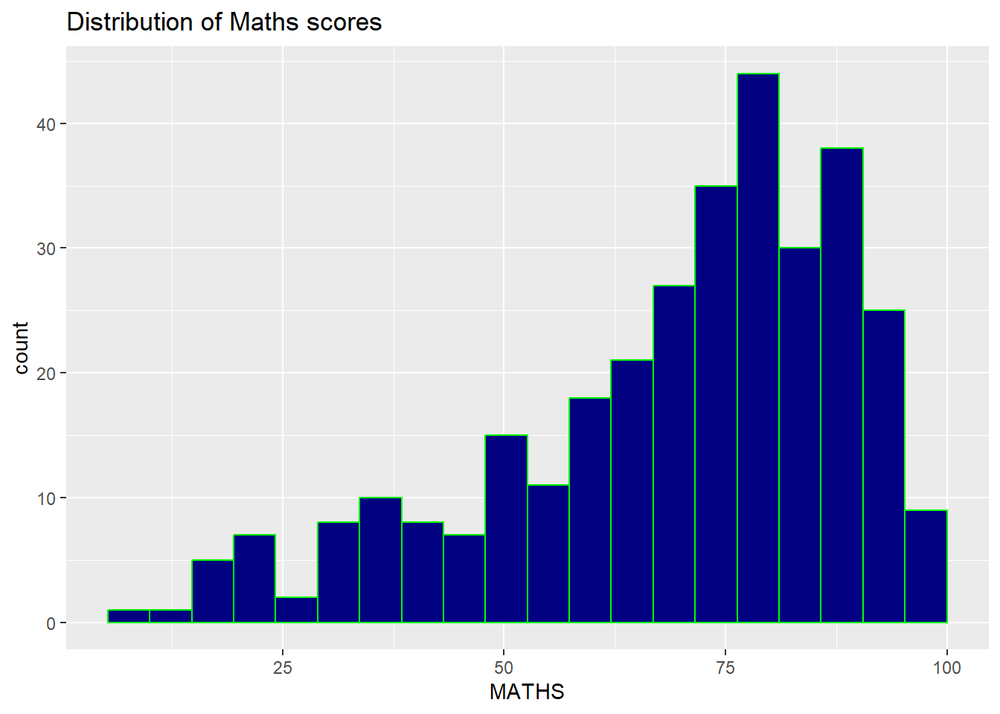
3.3 Using ggplot2 and group by genders
ggplot(data = exam_data,
aes(x = MATHS,
fill = GENDER)) +
geom_histogram(bins = 20,
boundary = 100,
color = 'grey30')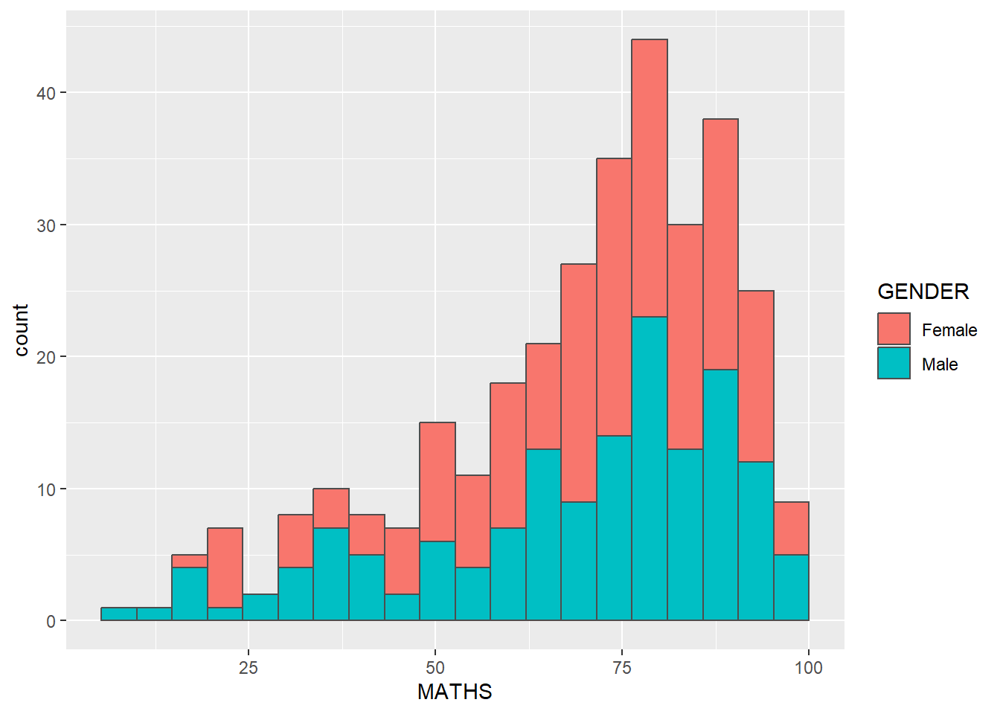
4 Plotting a simple density estimate
ggplot(data = exam_data,
aes(x = MATHS,
color = GENDER)) +
geom_density()
5 Plotting a simple boxplot with data points
ggplot(data = exam_data,
aes(y = MATHS,
x = GENDER)) +
geom_boxplot() +
geom_point(position = 'jitter',
size = 0.5)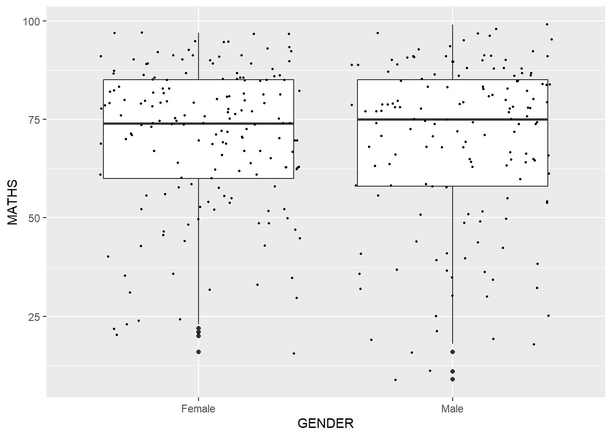
6 Plotting a simple violin plot together with boxplot
ggplot(data = exam_data,
aes(y = MATHS,
x = GENDER)) +
geom_violin(fill = 'light green') +
geom_boxplot(alpha = 0.25) +
stat_summary(geom = 'point',
fun.y = 'mean',
color = 'maroon',
size = 3)Warning: The `fun.y` argument of `stat_summary()` is deprecated as of ggplot2 3.3.0.
ℹ Please use the `fun` argument instead.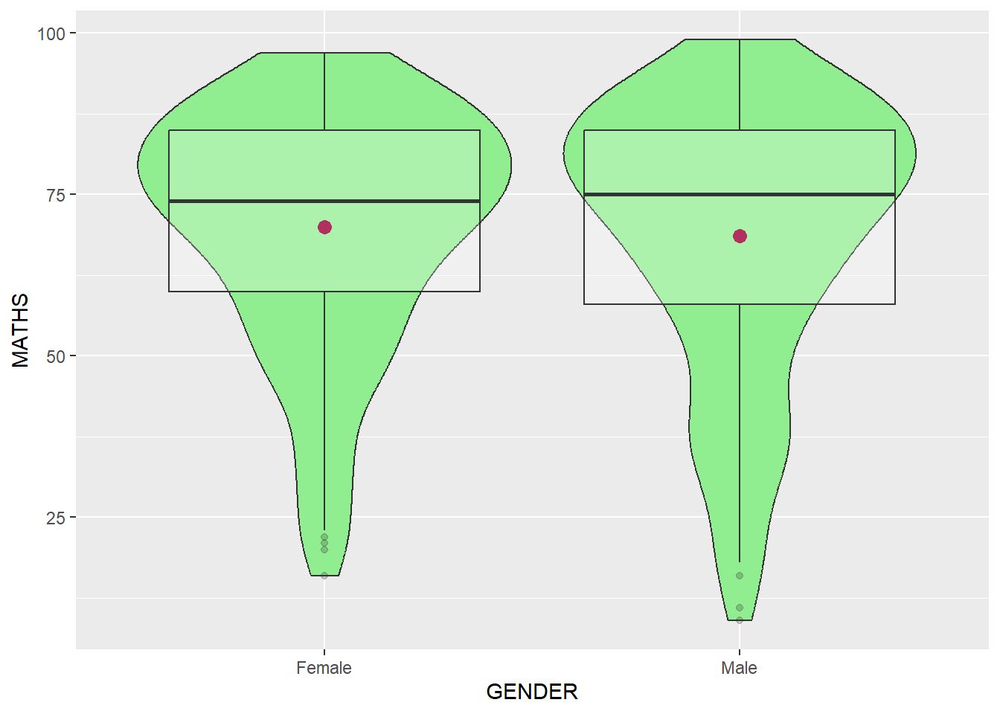
7 Plotting a simple scatter plot (maths vs english)
ggplot(data = exam_data,
aes(y = MATHS,
x = ENGLISH)) +
geom_point(color = 'pink') +
geom_smooth(size = 0.25)Warning: Using `size` aesthetic for lines was deprecated in ggplot2 3.4.0.
ℹ Please use `linewidth` instead.`geom_smooth()` using method = 'loess' and formula = 'y ~ x'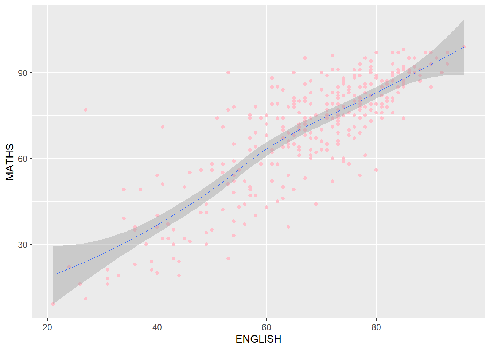
8 Plotting trellis using facet
ggplot(data = exam_data,
aes(x = MATHS)) +
geom_histogram(bins = 20) +
facet_wrap(~ CLASS)
9 Plotting trellis using facet_grid
ggplot(data = exam_data,
aes(x = MATHS)) +
geom_histogram(bins = 20) +
facet_grid(~ CLASS)
10 Plotting trellis boxplot using facet_grid (slides 43)
ggplot(data = exam_data,
aes(y = MATHS,
x = CLASS)) +
geom_boxplot(alpha = 0.5) +
facet_grid(~ GENDER)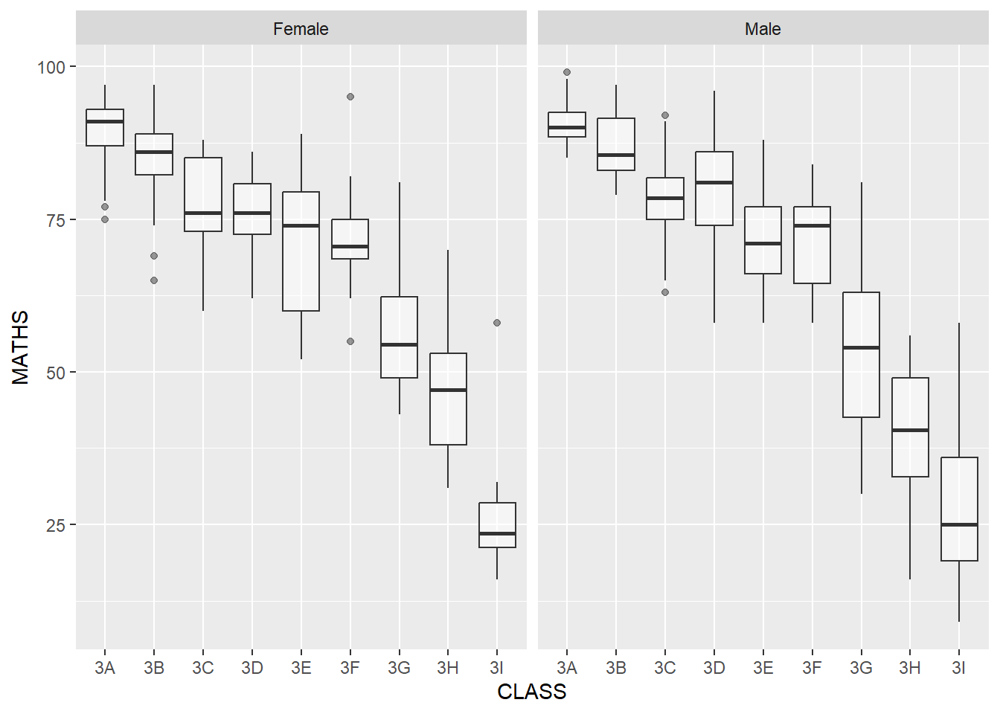
11 Plotting trellis boxplot using facet_grid (slides 44)
ggplot(data = exam_data,
aes(y = MATHS,
x = CLASS)) +
geom_boxplot(alpha = 0.5) +
facet_grid(GENDER ~ .)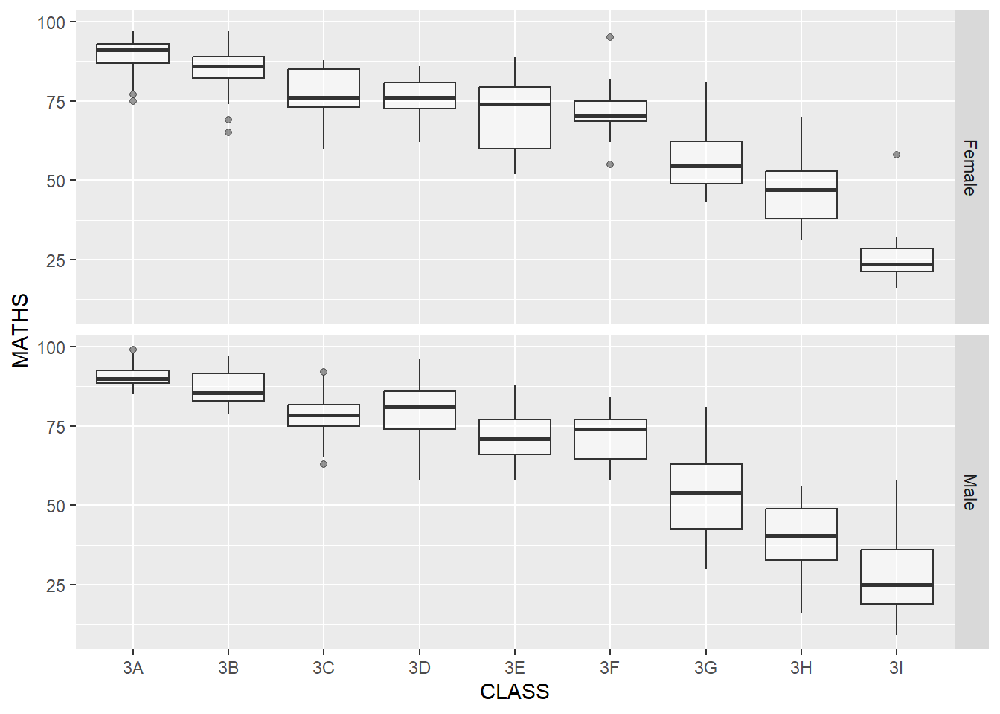
12 Plotting trellis boxplot using facet_grid (slides 45)
ggplot(data = exam_data,
aes(y = MATHS,
x = GENDER)) +
geom_boxplot() +
facet_grid(GENDER ~ CLASS) 
13 Plotting boxplot by fixing y&x range
ggplot(data = exam_data,
aes(y = MATHS,
x = ENGLISH)) +
geom_point() +
geom_smooth(method = lm,
size = 0.5) +
coord_cartesian(xlim = c(0, 100),
ylim = c(0, 100)) +
theme_classic()`geom_smooth()` using formula = 'y ~ x'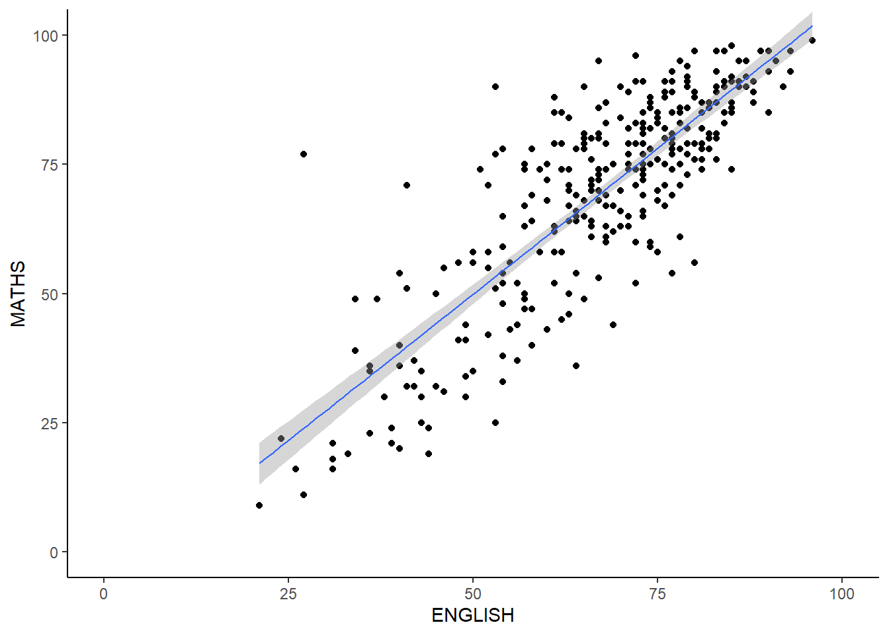
14 Plotting barchart with requested theme (slide 53)
ggplot(data = exam_data,
aes(y = RACE)) +
geom_bar() +
theme_minimal() +
theme(panel.background = element_rect(fill = 'light blue', color = 'white', size = 1, linetype = 'solid'),
panel.grid.major = element_line(color = 'white', linetype = 'solid'),
panel.grid.minor = element_line(color = 'white', linetype = 'solid'))Warning: The `size` argument of `element_rect()` is deprecated as of ggplot2 3.4.0.
ℹ Please use the `linewidth` argument instead.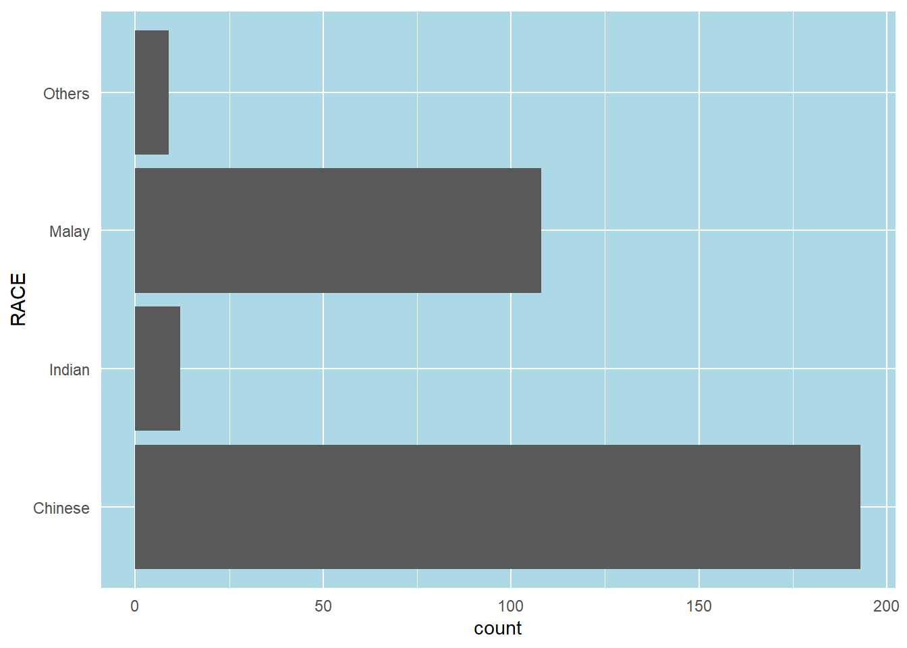
15 Plotting barchart using requested format (slide 55)
ggplot(data = exam_data,
aes(x = reorder(RACE, RACE, function(x)-length(x)))) +
geom_bar() +
ylim(c(0,230))+
geom_text(stat = 'count',
aes(label = paste(after_stat(count), ', ', round(after_stat(count)/sum(count) * 100, 1), '%')),
color = 'black',
size = 3,
vjust = -0.5) +
xlab('Race') +
ylab('No. of Pupils')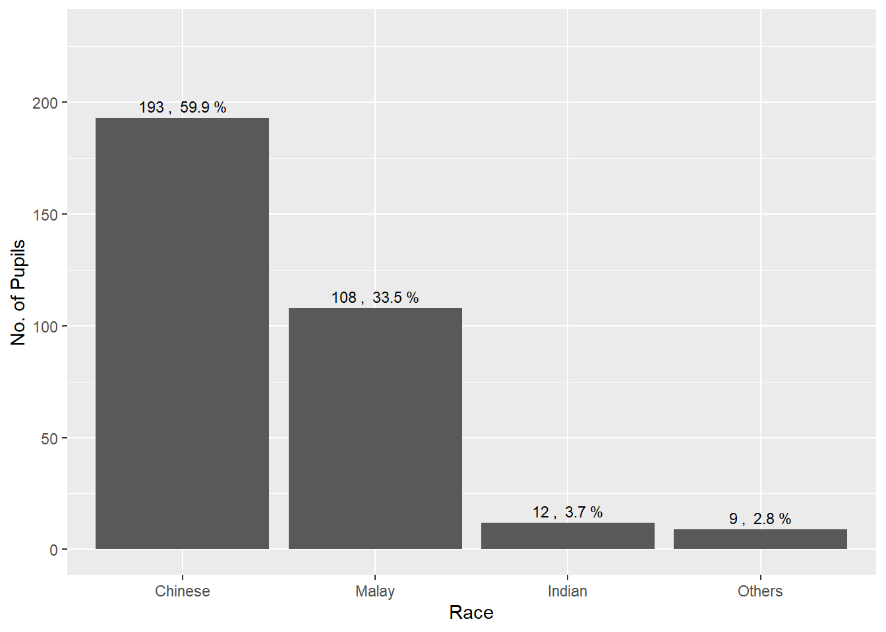
# theme_minimal() +
# theme(panel.background = element_rect(fill = 'grey80', color = 'white', size = 1, linetype = 'solid'),
# panel.grid.major = element_line(color = 'white', linetype = 'solid', linewidth = 0.5),
# panel.grid.minor = element_line(color = 'white', linetype = 'solid', linewidth = 0.5),
# axis.title.y = element_text(angle = 0))16 Plotting barchart using requested format (slide 59)
ggplot(data = exam_data,
aes(x = MATHS)) +
geom_histogram(bins = 20,
fill = 'light blue',
color = 'black') +
geom_vline(aes(xintercept = mean(MATHS, na.rm = T),
color = 'red',
linetype = 'dashed'),
show.legend = F) +
geom_vline(aes(xintercept = median(MATHS, na.rm = T),
color = 'black',
linetype = 'dashed'),
show.legend = F) +
xlab('MATHS') +
ylab('count')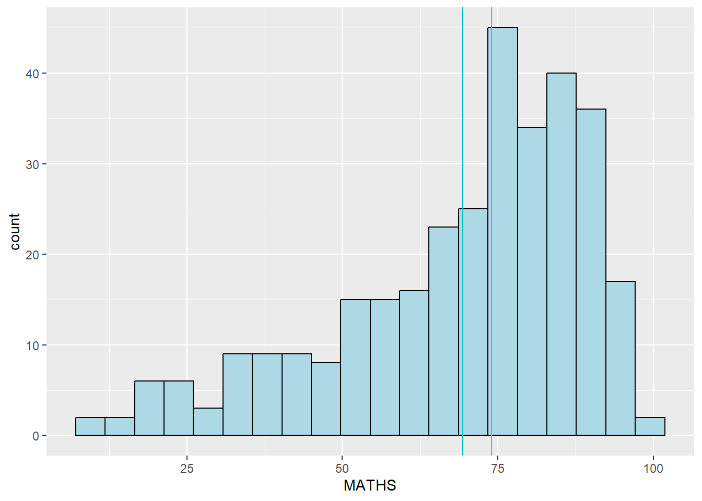
17 Plotting barchart for requested analysis (slide 60)
#Don't know how to do this part... Remember to check prof's updated slides
ggplot(data = exam_data,
aes(x = ENGLISH,
fill = GENDER)) +
geom_histogram() +
facet_grid(~ GENDER) +
geom_histogram(aes(x = ENGLISH),
alpha = 0.5) +
xlab('ENGLISH') +
ylab('count')`stat_bin()` using `bins = 30`. Pick better value with `binwidth`.
`stat_bin()` using `bins = 30`. Pick better value with `binwidth`.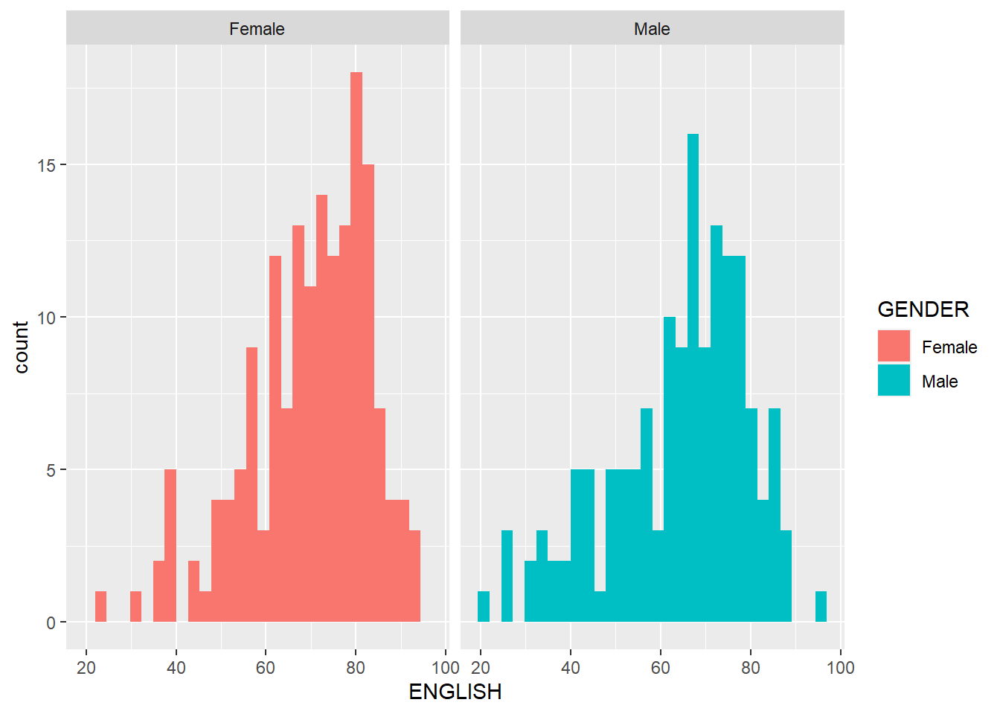